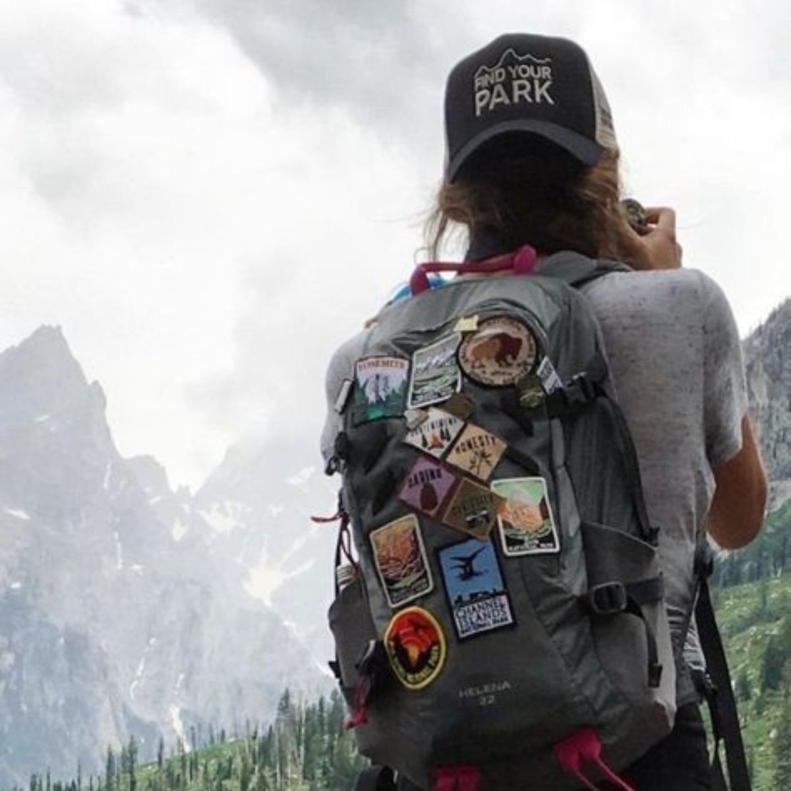
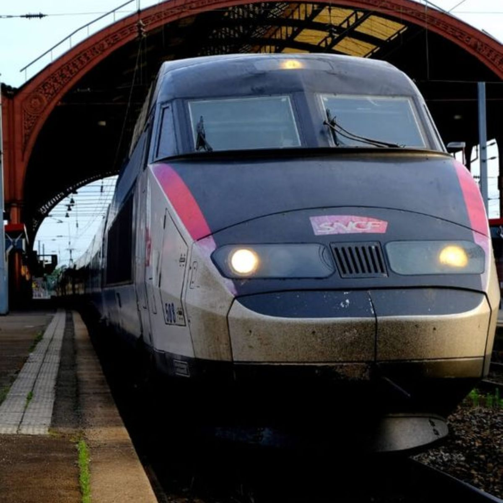
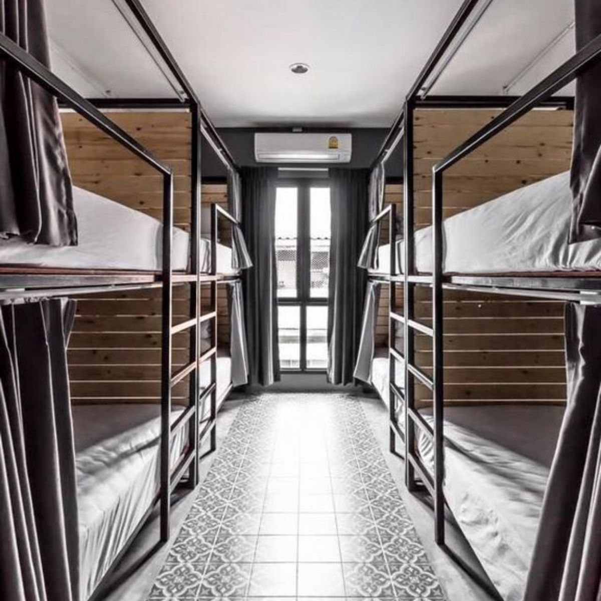

About Us
Destination Guides
Packing List
Gear
Travel Tips
Resources
Photo Gallery
Iceland
One bag backpacker hiking

Sightseeing the beautiful American parks
Italy river
Venice, Italy

Highspeed train in Japan

Bunkbeds in hostel
Paros, Greece